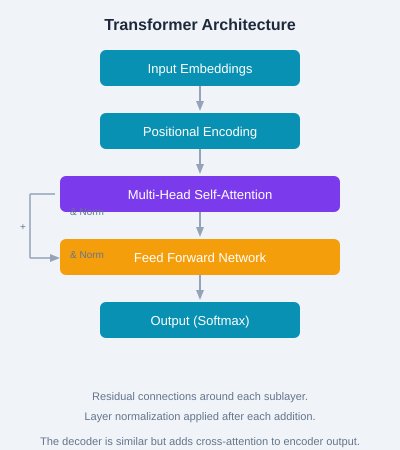

Transformers in Generative AI
The Transformer architecture (Vaswani et al., 2017) replaced recurrent neural networks by relying entirely on attention mechanisms. It enables parallel processing of sequences and scales to billions of parameters, forming the backbone of all major LLMs.

Figure: Key components of the Transformer encoder block.
Each input token is mapped to a high-dimensional vector (e.g., 768d for BERT-base, 12288d for GPT-4). Embeddings are learned during training and capture semantic relationships between tokens.
Since attention has no inherent notion of position, positional encodings are added to input embeddings. Original transformers used sinusoidal functions; learned positional embeddings are also common.
The core innovation. Queries (Q), Keys (K), and Values (V) are linear projections of the input. Attention weights are computed as: Attention(Q,K,V) = softmax(QKᵀ/√d)V. Multiple heads learn different relationship patterns.
# Scaled dot-product attention (single head)
def attention(Q, K, V):
d_k = Q.shape[-1]
scores = Q @ K.T / sqrt(d_k)
weights = softmax(scores, dim=-1)
return weights @ V
# Multi-head: run attention h times in parallel, concat results
def multi_head(Q, K, V, h=8):
heads = [attention(Q_i, K_i, V_i) for i in range(h)]
return concat(heads)GPT uses only the decoder stack with causal masking. It's autoregressive — each token is predicted from all previous tokens. The decoder consists of masked multi-head attention, then cross-attention (to encoder, if present), then FFN.